I found a clay sculpture that I thought would be interesting to 3D scan.
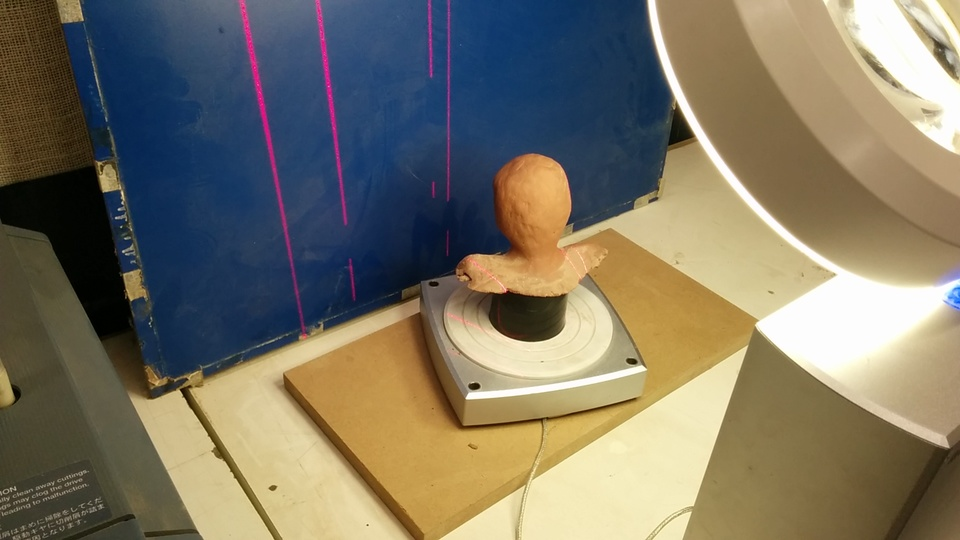

however before exporting it to STL, I forgot to stitch the images together, which made repairing ther holes extremely difficult and then the sculpture fell and broke, so I decided to use a mouse instead
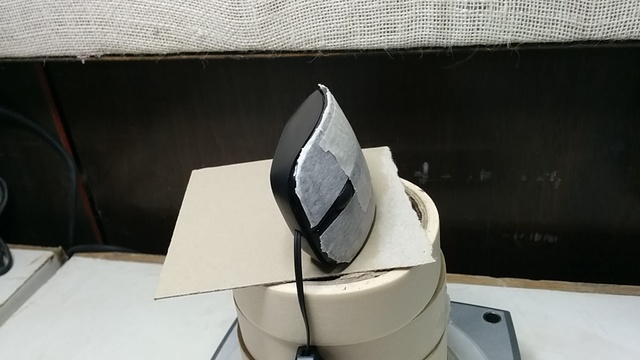I've put masking tape on the top of the mouse because in the first few iterations I got a gaping hole in the top, and the program recommended a matte white surface
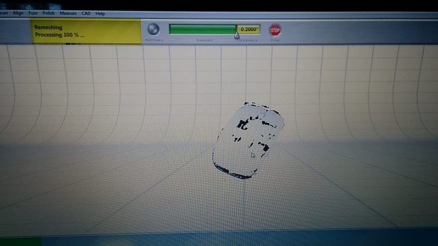this scan is slightly better, however the computer keeps crashing when I try to stich these images together. I'll have to try this out with a more ideal object, I'm guessing
the point of this exercise was to make an object that can't be made using subtractive manufacturing, so I chose to make a U-joint assembly, using two u shaped links coupled with a plus shaped link in the middle
This is a look at the design process before printing


When I printed this for a test, I realised that twisting them in a particular manner produced a very familiar symbol, so I decided to include a hal-cut on one of the arms of the link


Once the design was final, I ported the filed to .STL format and took it to Repetier-Host, the software our 3d printer uses. The setting used for this particular print are as follows:
and then on to the actual printing
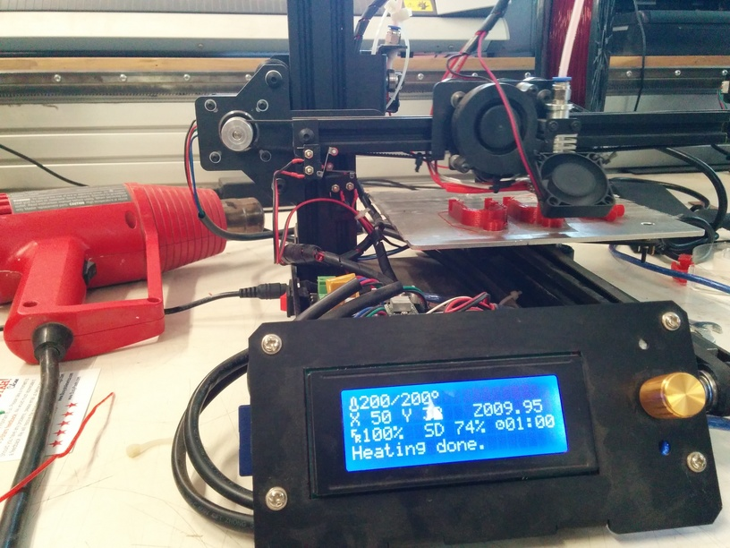 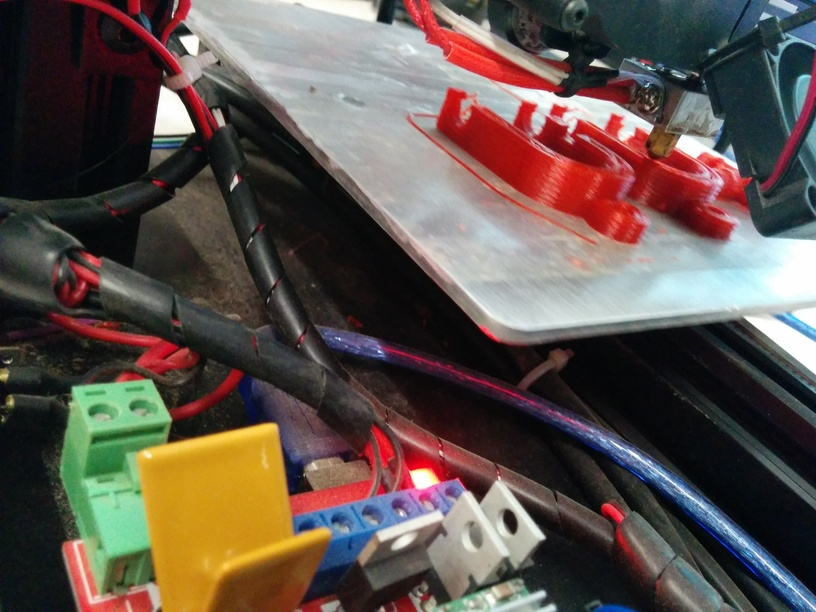 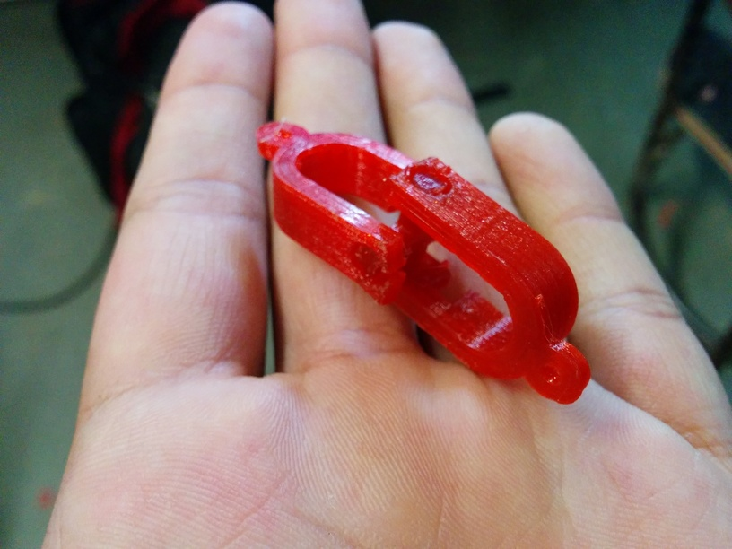 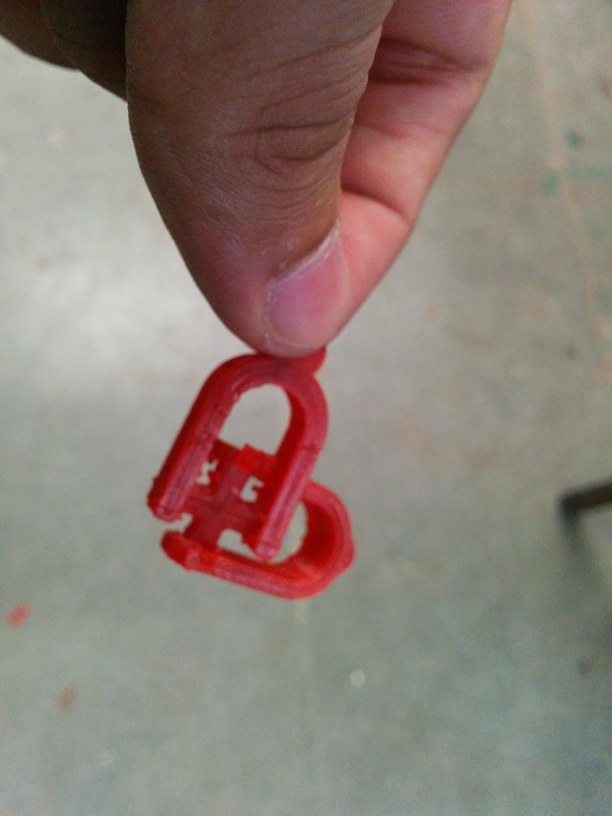 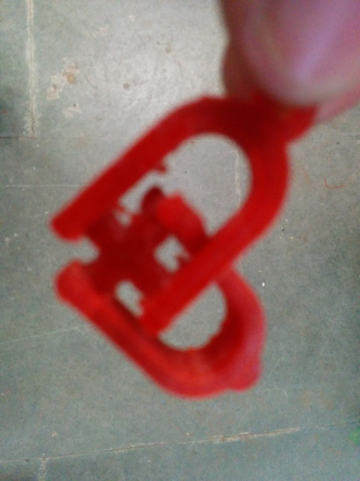Here's some other things I printed for fun
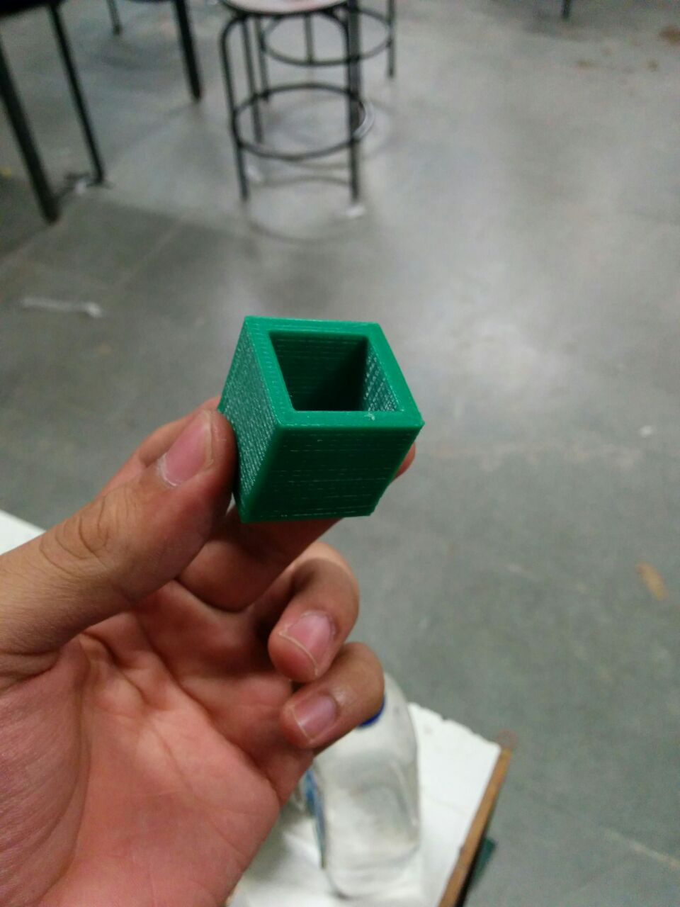 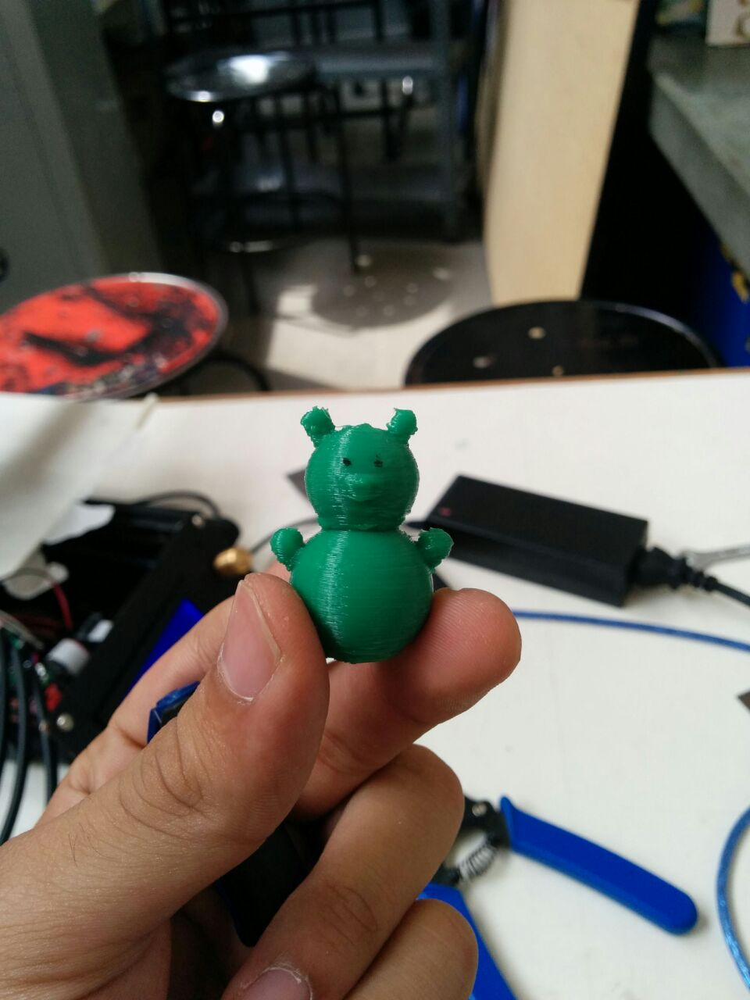 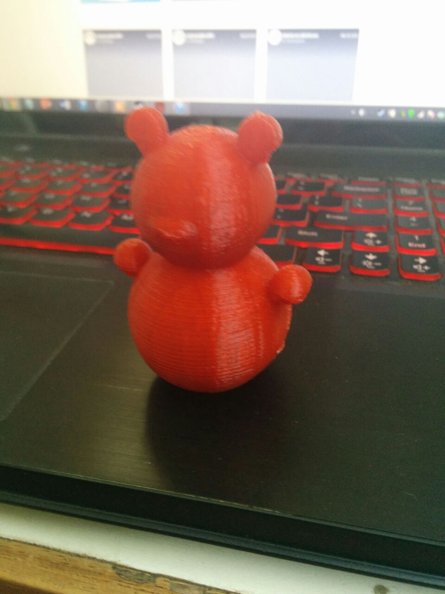